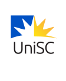
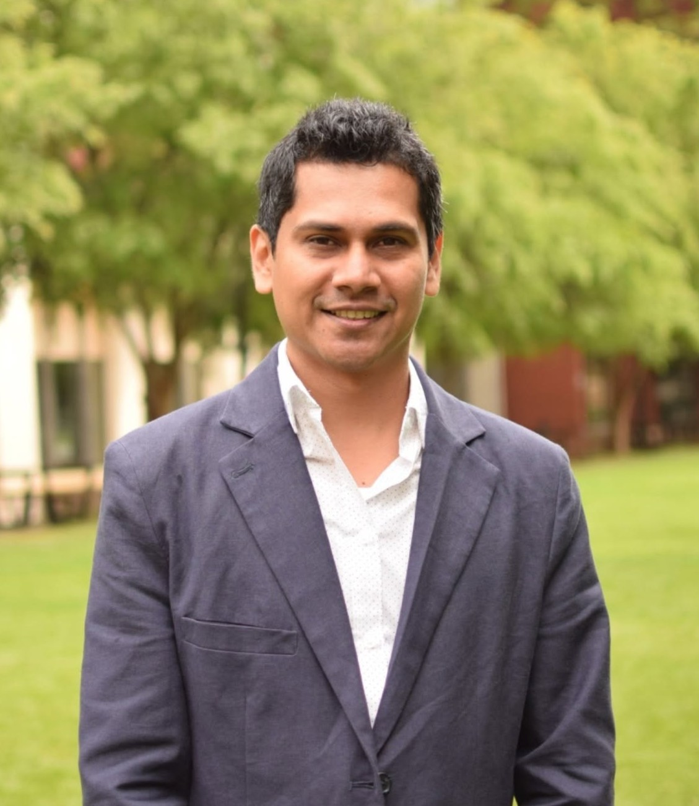
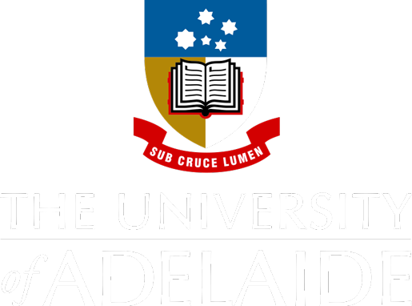
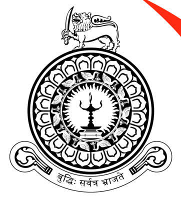

University of the Sunshine Coast
Adelaide, Australia
- LecturerJul 2025 – present

I am an AI researcher, educator, and data scientist with expertise in Machine Learning, AI for Business, and data-driven decision-making. With experience spanning academia and industry, including roles at the University of the Sunshine Coast, Kindship, and the University of Adelaide, I focus on applying AI to solve real-world business challenges.
I completed my PhD in Computer Science at the University of Adelaide in 2025, where I researched AI and language technologies for cyberbullying detection. I am passionate about translating cutting-edge AI research into practical, scalable solutions and welcome opportunities for industry collaboration.
Languages: English and Sinhalese.

Adelaide, Australia
Mawson Lakes, Australia
Ran tutorials on Systems Architecture, Design Thinking Studio, System Requirements and User Experience, and Project Studio.
Adelaide, Australia
Helped design and build Barb, an AI chatbot for NDIS queries. The team placed second in the CSIRO AI Sprint.

Australia
Built a Power BI dashboard that presents cyberbullying data so experts can evaluate machine learning, deep learning and transformer-based models.
Developed ML models to optimize resource utilisation of cloud platforms through a co-tunning approach. In this study, I investigated and evaluated how cloud resources (OpenStack) are used by big data platforms such as Hadoop and Spark.

Sri Lanka
Lectured on software engineering, advanced software development, embedded systems, computer networks, advanced web development and mobile applications.
Lectures and tutorials on advanced web development, software engineering, programming and project management.
Tutorials and labs on computer systems, operating systems and computer networks.
PhD in Computer Science
March 2021 – 2025
Thesis: Developing Language Resources and Advancing AI Techniques for Automatic Detection of Cyberbullying Causes
Bachelor of Science (Honours) in Information and Communication Technology
October 2011 – January 2016
Thesis: Reusing Discarded-Smartphone Capabilities on Quadcopters: The Rationale, Benefits & Issues
First class honours, GPA 3.86 / 4.00. Activities: CompSoc and IEEE.
Certification Introduction to Project Management, University of Adelaide, Aug 2023
Volunteering HDR Student Representative, University of Adelaide, Dec 2023 – Dec 2024
Tuition fee waiver and living stipend, 2021
Best ICT research, UCSC Research Symposium, 2016
University of Colombo, Sri Lanka, General Convocation 2015 · Details
University of Colombo, Sri Lanka, General Convocation 2015 · Details
University of Colombo, Sri Lanka, General Convocation 2015 · Details
Sangeethaya.lk, Digital Empowerment Foundation, India
Sangeethaya.lk · Details